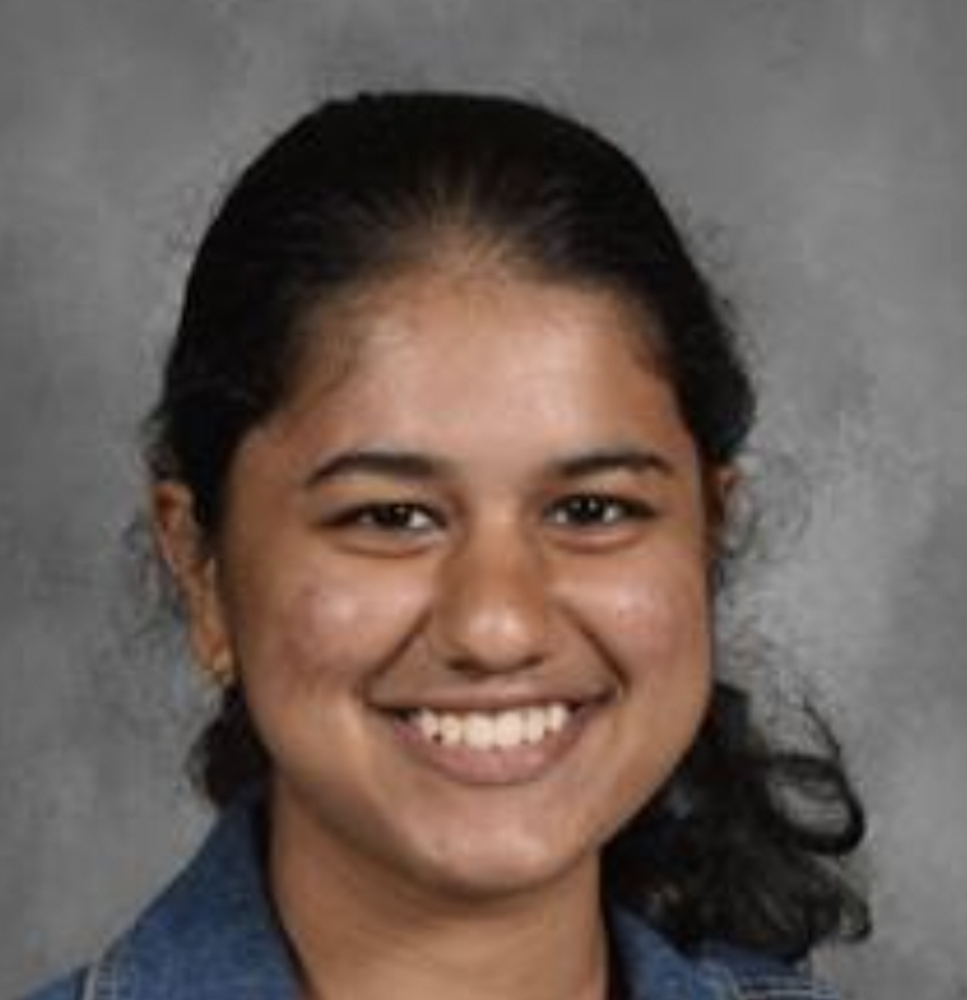
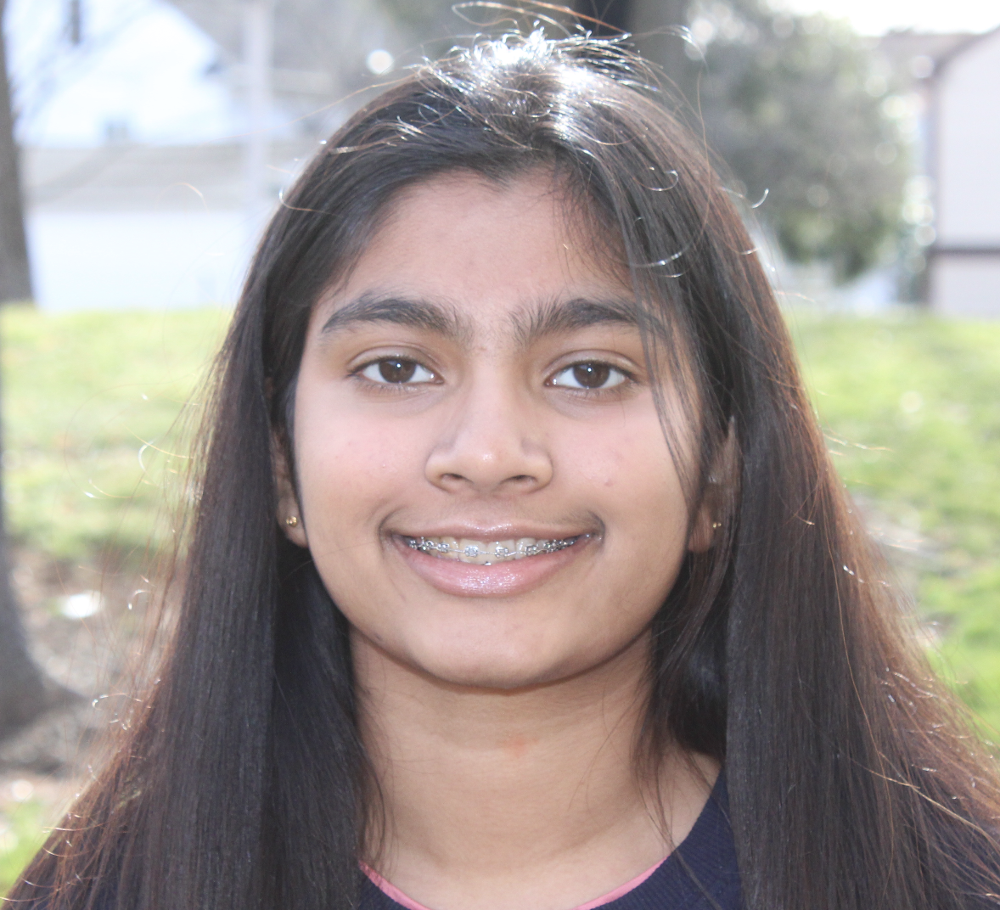

Hello! I'm Sowmya K,, a current junior residing in the Philadelphia Mainline, with a
strong passion for computer science. From web design to AI and machine learning,
programming is one of my favorite pastimes. I'm always eager to apply my skills
to assist the community, particularly the younger as well as the older generation. As I discovered my
love for coding at a young age, I aspire to inspire senior citizens and children to develop an
interest in programming as well. Together with Tanvi, our goal is to encourage
the Mainline's youth and elderly to pursue programming, and we believe that CS4Mainline is
the ideal platform to achieve this.

Hi! My name is Tanvi B., and I am a current junior living alongside the Philadelphia Mainline. My passions lie in the intersections of Cognitive Science and Business.
Ever since I waslittle, I was interested in all things tech-related. From unboxing the latest
iPhone to coding in Scratch, I wanted to share my interest in coding with other
kids for free and at no-cost. That’s why Sowmya and I kickstarted CS4Mainline, a non-profit originally started by my
brother. I wanted the kids and the elderly of our generation to get hands-on experience in coding and cybersecurity,
with the ability to be able to share their passions and ideas!
Hello there! I'm Mitsuki Yamaguchi, an 11th-grade student residing in Mainline. My passion for computer science has been the driving force behind my academic journey. Beyond the digital realm, I find joy in running and am actively involved in volunteering, fostering a sense of community. I am excited to be a part of the CS4 Mainline program, where I can contribute to the community's technological well-being.
My name is Shubham Gumma. Since I was 11 years old, I have had an interest in coding due to the innovation and creativity involved. During COVID-19, I learned JavaScript for 2 years which was primarily game based. In addition, I picked up some basic HTML and CSS skills which would be useful for website creation. As a started my high school career, I began my Freshman year by taking AP Computer Science Principles and continued coding my sophomore year by taking AP Computer Science A. In addition, being on the leadership team for our local Computers for Kids Club, I have some background on the cybersecurity risks involved with internet fishing and scamming. I am ready to reach out to others to help share my knowledge and keep the coding spark going!
Hi! I’m Ava J, a current sophomore in Mainline. When taking my first coding class in 5th grade, I gained a passion for coding and today is still one of my favorite pastimes. Furthermore, learning more about cybersecurity growing up became something that I became greatly interested in, which is why I’m so excited to mentor and share the knowledge and the importance of cybersecurity to the community around me through our Cybersecurity program in CS4Mainline! I truly believe that everyone deserves to know how to be safe online, and I believe that through our programs in CS4Mainline, our local community can earn and maintain the necessary skills to achieve this!
Hey! My name is Eric S and I am a current junior in high school. I know some basic coding, but I have a strong passion for cybersecurity and online safety, so I have joined CS4Mainline to cut down the digital divide. Some of my hobbies include running and listening to music.
Hi! I'm Michael Y, a current junior from the Mainline. Because we are moving into a rapidly changing digital environment, it is my belief that now is the most important time for people to learn more about technology. Together with the CS4Mainline team, I work to help both senior citizens and children conquer the ever-changing online presence.
Hi my name is Pavithra N and I am a current junior residing in the mainline. From a young age I have enjoyed computer science. I have experience in HTML, CSS, Python, and Java. I can't wait to help out so that others can understand the importance of technology and what it does for our every day lives.
I'm Prranit Arora, a sophomore at Conestoga High School.
I am a full stack developer, experience in cloud computing, website backend management, app dev with Unity and Unreal Engine, azure services, neural networks with tensorflow
My main interest in technology is working with machine learning models.
Hello I’m Avi G., and I am a current sophmore residing in Berwyn . My passions lie in engineering and computer sciences .
I have been doing robotics since I was little starting out with FLL and moving onto vex and have experimented with programming robots and scratch. I even took summer courses on html and am secretary of computer for kids
I joined CS4 mainline hoping to share my passion with other children in hopes that they will find it as fascinating as I do.